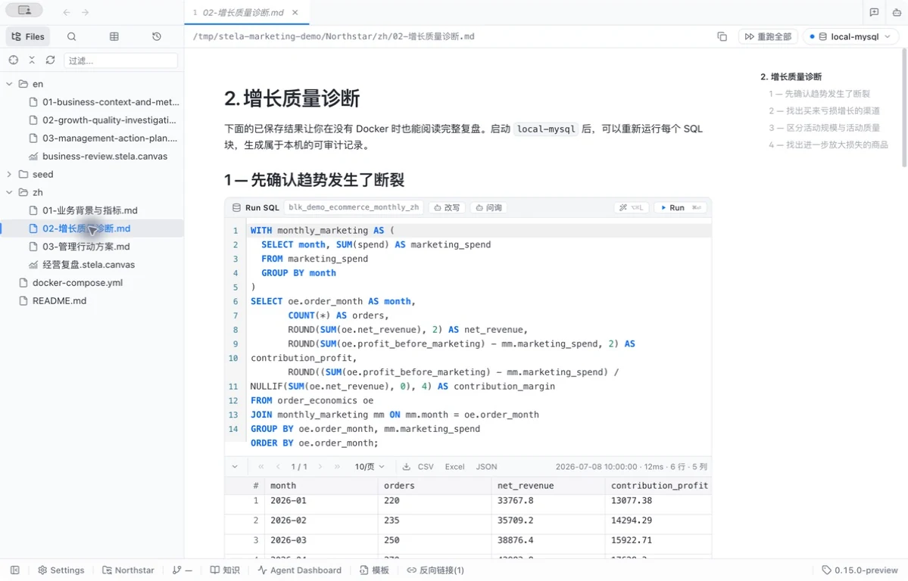
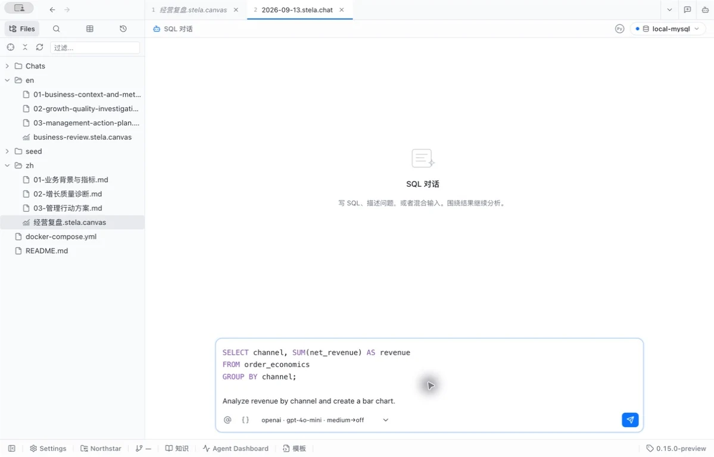
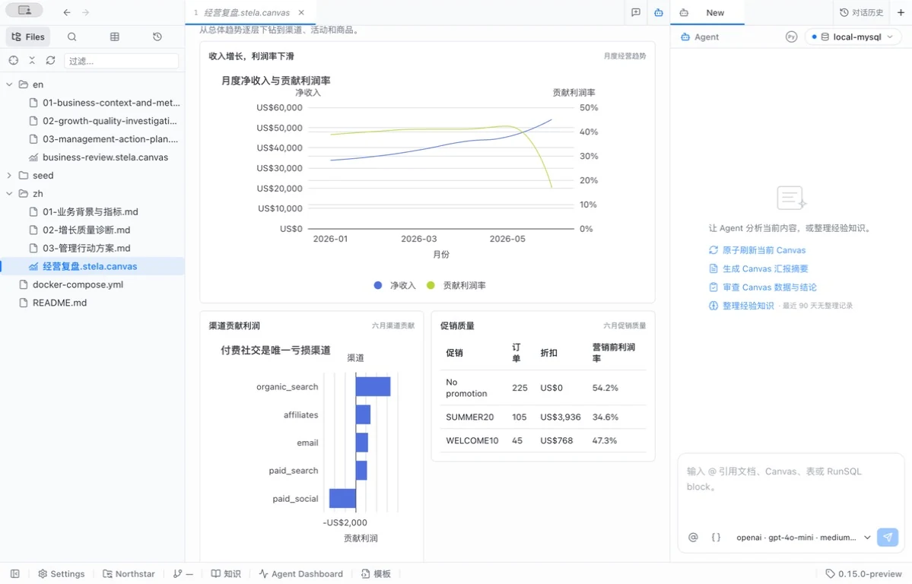
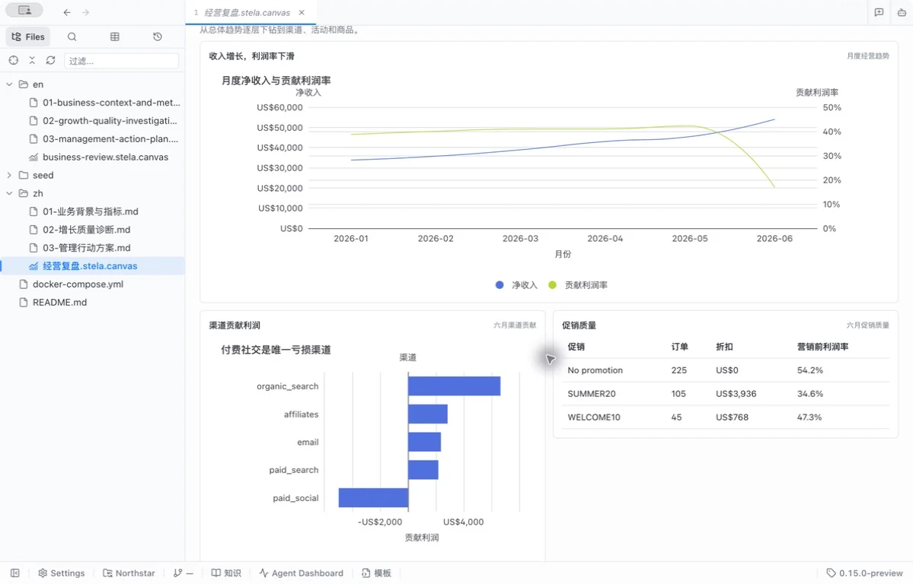
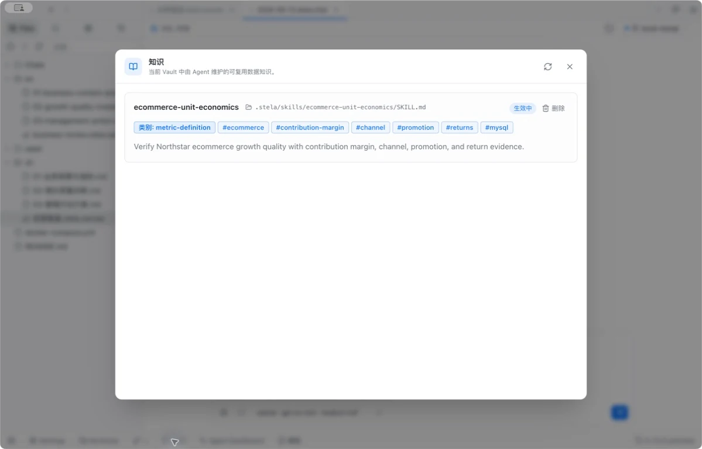
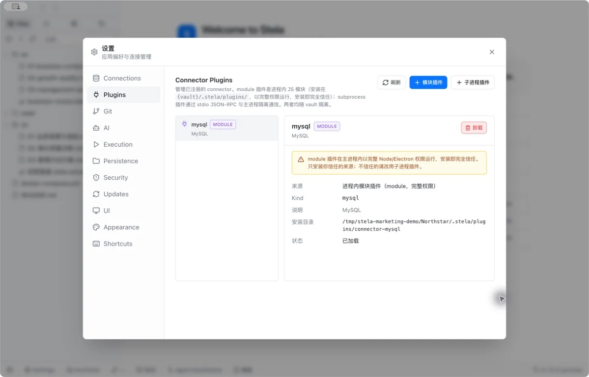
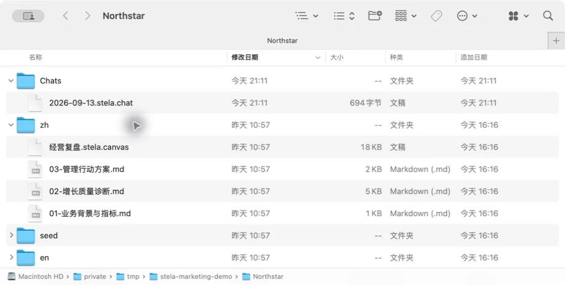

<!doctype html><html lang="en"><meta charset="utf-8"><meta name="viewport" content="width=device-width,initial-scale=1"><title>Stela product screenshots</title><link rel="stylesheet" href="../assets/marketing.css"><main class="stela-wrap"><a href="../index.html">← Stela</a><h1>Product screenshots</h1><section class="stela-section"><h2>SQL in Markdown</h2><figure class="stela-shot"><a href="../assets/product/markdown.png"></a><figcaption data-i18n="mdShot">Markdown 中的 SQL 代码块与保存的结果表格。</figcaption></figure></section><section class="stela-section"><h2>SQL in Chat</h2><figure class="stela-shot"><a href="../assets/product/chat.png"></a><figcaption data-i18n="chatShot">SQL Chat 的混合输入示例：SQL 与自然语言，尚未发送。</figcaption></figure></section><section class="stela-section"><h2>Data Agent</h2><figure class="stela-shot"><a href="../assets/product/agent.png"></a><figcaption data-i18n="agentShot">当前 Canvas 旁的 Agent Panel，可继续提问和分析。</figcaption></figure></section><section class="stela-section"><h2>Canvas</h2><figure class="stela-shot"><a href="../assets/product/canvas.png"></a><figcaption data-i18n="canvasShot">Canvas 中的图表与表格，展示公开示例的已保存结果。</figcaption></figure></section><section class="stela-section"><h2>Notes & automatic knowledge maintenance</h2><figure class="stela-shot"><a href="../assets/product/knowledge.png"></a><figcaption data-i18n="knowledgeShot">知识管理界面：查看 Vault 中生效的知识。图中为随附示例知识。</figcaption></figure></section><section class="stela-section"><h2>Database connector plugins</h2><figure class="stela-shot"><a href="../assets/product/plugins.png"></a><figcaption data-i18n="pluginsShot">已安装并加载的 MySQL 连接器插件。</figcaption></figure></section><section class="stela-section"><h2>Local-first</h2><figure class="stela-shot"><a href="../assets/product/local.png"></a><figcaption data-i18n="localShot">在本地文件夹中查看 Markdown、Chat 和 Canvas 文件。</figcaption></figure></section></main></html>